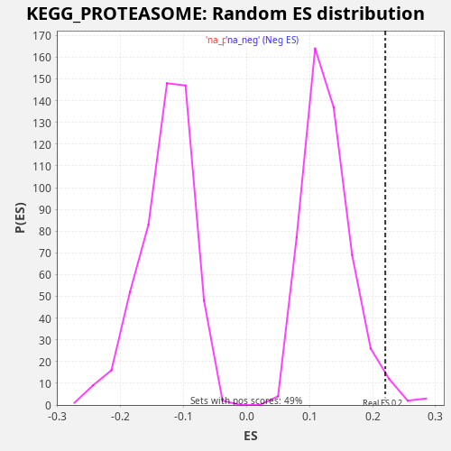

Profile of the Running ES Score & Positions of GeneSet Members on the Rank Ordered List
The same image in compressed SVG format
| Dataset | TCGA |
| Phenotype | NoPhenotypeAvailable |
| Upregulated in class | na_pos |
| GeneSet | KEGG_PROTEASOME |
| Enrichment Score (ES) | 0.22021243 |
| Normalized Enrichment Score (NES) | 1.7092721 |
| Nominal p-value | 0.02631579 |
| FDR q-value | 0.09923767 |
| FWER p-Value | 0.901 |
| SYMBOL | RANK IN GENE LIST | RANK METRIC SCORE | RUNNING ES | CORE ENRICHMENT | |
|---|---|---|---|---|---|
| 1 | PSMB10 | 1735 | 0.655 | -0.0692 | Yes |
| 2 | PSME1 | 2103 | 0.490 | -0.0654 | Yes |
| 3 | PSME2 | 2641 | 0.316 | -0.0708 | Yes |
| 4 | PSMB8 | 2710 | 0.297 | -0.0512 | Yes |
| 5 | PSMA4 | 2861 | 0.258 | -0.0359 | Yes |
| 6 | PSMC6 | 3545 | 0.150 | -0.0490 | Yes |
| 7 | PSMA3 | 4509 | 0.065 | -0.0770 | Yes |
| 8 | PSMC5 | 4577 | 0.061 | -0.0574 | Yes |
| 9 | PSMB1 | 4723 | 0.052 | -0.0418 | Yes |
| 10 | PSMD6 | 5065 | 0.035 | -0.0367 | Yes |
| 11 | PSMA5 | 5979 | 0.010 | -0.0621 | Yes |
| 12 | PSMB6 | 6267 | 0.006 | -0.0541 | Yes |
| 13 | PSME4 | 6748 | 0.002 | -0.0564 | Yes |
| 14 | PSMA1 | 7476 | -0.000 | -0.0719 | Yes |
| 15 | POMP | 7791 | -0.001 | -0.0654 | Yes |
| 16 | PSMF1 | 7853 | -0.001 | -0.0454 | Yes |
| 17 | PSME3 | 8080 | -0.002 | -0.0342 | Yes |
| 18 | PSMC2 | 8697 | -0.008 | -0.0437 | Yes |
| 19 | PSMA6 | 9282 | -0.019 | -0.0516 | Yes |
| 20 | PSMC1 | 9305 | -0.019 | -0.0295 | Yes |
| 21 | PSMD14 | 9357 | -0.020 | -0.0089 | Yes |
| 22 | PSMB11 | 9367 | -0.021 | 0.0138 | Yes |
| 23 | PSMB3 | 10180 | -0.046 | -0.0062 | Yes |
| 24 | PSMD1 | 10575 | -0.066 | -0.0039 | Yes |
| 25 | PSMB4 | 10606 | -0.068 | 0.0178 | Yes |
| 26 | PSMD13 | 10668 | -0.072 | 0.0378 | Yes |
| 27 | PSMD7 | 10783 | -0.077 | 0.0550 | Yes |
| 28 | PSMA2 | 10941 | -0.088 | 0.0699 | Yes |
| 29 | PSMD12 | 11669 | -0.144 | 0.0544 | Yes |
| 30 | PSMC4 | 11748 | -0.151 | 0.0735 | Yes |
| 31 | PSMB2 | 11780 | -0.154 | 0.0951 | Yes |
| 32 | PSMB5 | 11820 | -0.160 | 0.1163 | Yes |
| 33 | PSMC3 | 12005 | -0.182 | 0.1297 | Yes |
| 34 | PSMD4 | 12073 | -0.191 | 0.1494 | Yes |
| 35 | PSMA8 | 12374 | -0.230 | 0.1567 | Yes |
| 36 | PSMA7 | 12620 | -0.270 | 0.1669 | Yes |
| 37 | PSMD3 | 12673 | -0.282 | 0.1874 | Yes |
| 38 | PSMB9 | 12722 | -0.292 | 0.2081 | Yes |
| 39 | PSMD8 | 12932 | -0.331 | 0.2202 | Yes |
| 40 | PSMB7 | 14413 | -0.827 | 0.1646 | No |
| 41 | PSMD11 | 15728 | -1.877 | 0.1179 | No |
| 42 | PSMD2 | 16155 | -2.484 | 0.1185 | No |
| 43 | IFNG | 16707 | -3.586 | 0.1124 | No |

{kind=link}
{kind=link}